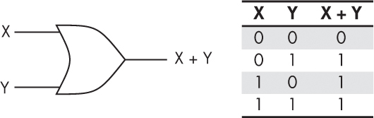
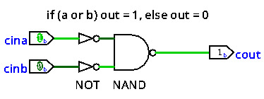

The OR Gate is a digital logic gate that produces an output that is true if any of its inputs are true.

The OR Gate is a digital logic gate that produces an output that is true if any of its inputs are true.

The internal circuit of the OR gate.
Reference
-
Fox, C. (2024). Computer architecture: From the stone age to the quantum age. No Starch Press.
-
Nisan, N., & Schocken, S. (2021). The Elements of Computing Systems: Building a modern computer from first principles. The MIT Press.